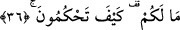
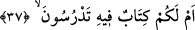

“Günahkârlar” diye tercüme edilen “mücrimîn”den maksad, âyetin nüzûl sebebinin de
işâret ettiği üzere kâfirlerdir. Gerçekten de kâfirler inkâr ve şirk günahını işlemiş olan
en büyük mücrimlerdir. Yoksa günah işlemeyi genel anlamda değerlendirecek olursak
“günah işlemek” –her ne kadar itâatkar müslüman fasık müslümanla bir değilse de-
müslümanlıkla zıtlaşan ve onunla çelişen bir durum değildir.
Bu âyet-i kerîmede aklı başında olanlara bir öğüt ve gözü gören kimselere bir
yasaklama vardır. Bu ifâdenin ardından âyetin akışı içinde yine kâfirlere hükümlerini
reddetmeyi pekiştirme ve iyice arttırma açısından hitâb edilerek şöyle söyleniyor:
36. Size ne oluyor? Ne biçim hüküm veriyorsunuz?
Bu ifâde, kâfirlerin hükümlerinin çok tuhaf olduğunu ve akla uzak bulunduğunu ifâde
ederek böyle bir hükmün, aklı başında hiç bir kimseden çıkmayacağını vurguluyor. “Mâ
lekum” lâfzında yer alan “mâ” mübtedâ olup ref mahallinde ve istifhâmiyedir. Bu harfin
sağlamış olduğu istifham, istifhâm-ı inkâridir. Bu sualle, onların bu iddiâlarında kabûle
şâyan ve kendisine değer verilebilecek bir yönün bulunabileceğinin inkârı
sağlanmaktadır. “Lekum” ifâdesi ise haberdir. Bu açıklamalardan sonra âyete şöyle
mânâ vermek mümkündür: Sizin elinize hangi delil geçti ki böylesine çirkin olan bir
yargıya vardınız. Âhirette insanlara mükâfat verme yetkisi sanki size verilmiş de
dilediğiniz hakkında canınızın istediği şekilde hüküm veriyorsunuz.
Âyette yer alan “keyfe” lâfzı “hangi durumda” demek olup “bilgili hâlde mi yoksa
câhillik hâlinde mi bu hükmü veriyorsunuz?” anlamındadır. Bu takdirde “keyfe” lafzı
zarf olur. Âyeti şöyle anlamak mümkündür: “Sizler bildiğinizden mi yoksa
bilmediğinizden mi bu hükmü veriyorsunuz?” Bu duruma göre “keyfe” lafzı hâl olur.
et-Tevilatu’n-necmiyye’de âyet-i kerîmeye şöyle bir îzâh yapılır: Bizler şerîatın
ahkâmı, tarikatın âdâbı ve hakîkatın sembollerinin gereğini yerine getirmeye çalışan ve
bu hususta titizlik gösteren kimseleri şerîata, tarikata, hakîkata aykırı çirkin vasıflar
kazanmış kötü ahlâklı kimselerle bir tutarmıyız hiç? Size ne oluyor ki, böylesine açık
bir zulme (olabilir diye) hüküm veriyorsunuz ve böylesine çirkin bir sözü
söyleyebiliyorsunuz.
37. Yoksa size âid bir kitap var da, (bu bâtıl inanışları) onda mı okuyorsunuz?
“Yoksa size âid” gökten inen “bir kitap var da (bu bâtıl inanışları) onda mı
okuyorsunuz?”